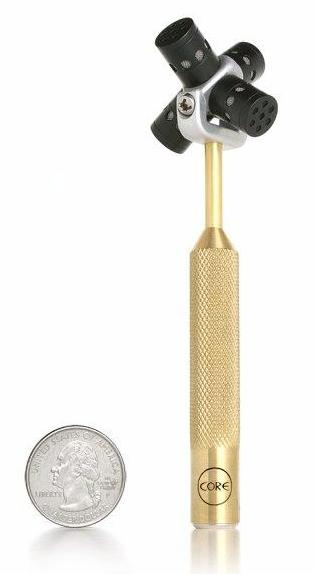
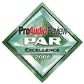
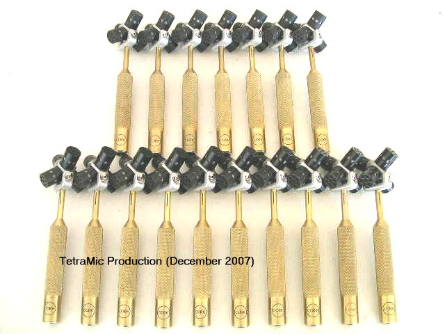

(Last updated 06/20/2019)
May 5, 2019: We've reduced the price of
TetraMic! Please see the Online Ordering page for
details.


May 5, 2019: We've reduced the price of
TetraMic! Please see the Online Ordering page for
details.
Core Sound is pleased to offer its groundbreaking TetraMic, the first portable, single
point, stereo & surround sound Ambisonic soundfield microphone to be
available for under $1000 (TetraMic alone), or under $1350 fully
configured for most multi-track recorders and audio interfaces.
Individually calibrated, each TetraMic is the finest performing
microphone of its type in the world. Compare its performance to similar
soundfield microphones selling for $3000 or more and you'll be quite
amazed.
Each and every TetraMic is individually calibrated and comes with its
own calibration files. All other first-order ambisonic mic from major
manufacturers use a single generic calibration file for all of their microphones.
Based on the principles of Ambisonic recording developed by Michael
Gerzon and Peter Craven during the 1970's, TetraMic allows you to place
a single exceedingly accurate tetrahedral microphone in a sound field,
record four channels of audio in "A" format, transform them using
software into "B" format (W, X, Y and Z), and later interpret those four
channels to essentially any single-point configuration of
microphones:
- omni
- sub-cardioid
- cardioid
- super-cardioid
- hyper-cardioid
- figure-8
- multiple combinations of those including:
- Blumlein (two crossed figure-8 microphones in the azimuth
plane))
- Height-enabled Blumlein (three orthogonal figure-8 microphones)
- M/S (Mid/Side)
- XY (two crossed cardioids) separated by any arbitrary angle
- binaural, using HRTF information
- Three hypercardioids facing forward and two cardioids facing rearward
(for 5.1 surround)
- any combination and arrangement of microphones for surround sound or other effects
The apparent orientation can be rotated, tilted, tumbled or zoomed at will.
The four channels of "B" format can also be interpreted into almost
any playback format, including:
- mono (without "sum to mono" phase cancellation issues)
- stereo
- binaural, using HRTF information
- four speakers arranged as a square or rectangle
- six speakers arranged as a regular or irregular hexagon
- 5.1 (ITU)
- 7.1
- 10.1
- any of the above plus height information (e.g., two hexagonal arrays of
speakers, one above the listener and one below)
- and many, many more.
In addition to modelling any number and type of coincidently
positioned first-order microphones, you can model spaced microphone
arrays (e.g., ORTF) by using more than one TetraMic.
This process allows your audio projects to have unparalleled
flexibility in post-production.
How good a microphone is TetraMic? We believe TetraMic has the
flattest and most extended fig-8 response of any commercially available
microphone, bar none; so it's among the best Blumlein arrays in the
world. Its free-field omni response is not quite as good as a Bruel &
Kjaer 4133 1/2-inch measurement microphone; it's only as good as the
wonderful DPA 4003 that we use for calibration -- i.e., sensational!
However its diffuse-field response is better than the 4003. This
combination of capabilities makes TetraMic one of the world's finest
microphones.
When used as an acoustic sensor to locate sound sources in space,
TetraMic is capable of resolving angle-of-arrival to five degrees or
less, over all three spatial axes. This is better performance than any
competing sensor.
Until now, a tetrahedral Ambisonic microphone and its associated
electronics cost over $4000 and sometimes as much as $7000. TetraMic
is priced under $1000 including its processing software. And its
angular accuracy performance surpasses all other microphones of its type.
TetraMic is more than four microphone capsules on a tetrahedral
mount. Building a TetraMic starts with a large batch of carefully
assembled microphone capsules, pre-selected for sensitivity and
frequency response. Each capsule is then exhaustively tested for
sensitivity, frequency response, directivity pattern and other
parameters. We select four well-matched capsules and confirm their
compatibility. Then another round of exhaustive testing begins, this
time for the complete tetrahedral assembly. All in all, each TetraMic
undergoes more than seven hours of assembly, testing and calibration.
Each TetraMic exits the test phase with its own calibration and
correction files, used with VVEncode plug-in to ensure that each
TetraMic is a fine example of one of the best sounding microphones in
the world.
VVEncode on PCs and Macs
To ensure that TetraMic is the finest sounding Ambisonic microphone
in the world, it is supported by a custom version of David McGriffy's
fine VVEncode encoder plug-in.
software. With design assistance from some of the world's experts in
Ambisonic microphone design and testing (including those involved with
the original commercial Ambisonic microphones), VVEncode performs detailed
equalization based on both individual capsule-level and fully integrated
TetraMic-level calibrations. It includes functions for A- to B-format
encoding and configuration for upright, inverted and two endfire
orientations,
VVEncode outputs B-format in the world-standard ambiX format and
operates on PCs and Macs.
For real-time processing you would use the VVEncode and
any industry-standard VST (or AAX) decoder plugins with your recording
software. VVEnode perfroms A- to B-format transformation using the
calibration data for your TetraMic. The decoders create virtual
microphones and configure the output for different playback
configurations. VVEncode operates with any recording application that
can use four-channel VST or AAX plugins (e.g., Pro Tools, SONAR,
AudioMulch, Plogue Bidule, Wavelab, Cakewalk, Cubase, Samplitude, Ableton Live,
Nuendo, Reason, FL Studio, Sound Forge, Nuendo, Reaper).
Linux
Fons Adriaenson's powerful and great sounding Linux-based TetraProc
application can be found here.
AMBDEC can be used for playback under Linux. For details see the
Ambisonia Wiki (www.ambisonia.com) and search for AMBDEC.
Jack and Ardour also work fine under Linux.
TetraMic Sound Samples
You can find a variety of recordings made with TetraMic at
www.ambisonia.com . Charles Veasey (user name: cveasey), Paul Hodges
(pwhodges), John Leonard (soundmanjohn), Hugh Pyle (hughpyle), and Len
Moskowitz (LenM) have posted recordings made with TetraMic.
All can be downloaded as B-format files, to be played back on any
ambisonic player. Most can be downloaded as stereo and 5.1 files too.
Next